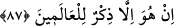
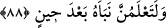
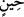

şöyle buyurur: “Yapmacık davranışlar sergileyenlerden ben de ümmetimin sâlihleri de
uzaktır.”[48] Bir başka hadiste ise “ben ve ümmetimin muttakileri yapmacıklıktan
uzağız”[49] buyurulur. Yine Hz. Peygamber’in (s.a.) secîli duâlardan menettiği[50] sahih
olarak bilinmektedir. Çünkü bu tip duâlarda da tekellüf ve yapmacıklık söz konusudur.
Hz. Peygamber’in (s.a.) şöyle buyurduğu rivâyet edilir: “Yapmacık davrananların üç
alâmeti vardır: Kendi üstündekilerle tartışır; elde edemeyeceği şeyi ele geçirmeye
çalışır; bilmediği hususlarda konuşur, ahkâm keser.”[51]
Abdullah b. Mes’ûd (r.a.) der ki: İnsanlar! Bir şey bilen onu söylesin, bilmeyen de
‘Allah daha iyi bilir’, desin; çünkü bilmediğiniz bir şeyle ilgili olarak ‘Allah daha iyi
bilir’, diyebilmek de “ilim”dendir. Zira Allah Teâlâ peygamberine “ve ben olduğundan
başka türlü görünenlerden de değilim” demesini emretmiştir. Hadiste buyurulur ki:
Herhangi bir konuda bilmediği halde fetva verenlere gök ve yer melâikesi lânet
eder.”[52]
87. Bu Kur’an, ancak âlemler için bir öğüttür.
Benim Huda’dan getirmiş olduğum “Bu Kur’an” ya da peygamberlik “ancak”
insanlar ve cinler için, “âlemler için” O’ndan gelmiş bir “bir öğüttür” ve aynı
zamanda ebedî bir şereftir de.
88. Onun verdiği haberin doğruluğunu bir zaman sonra çok iyi öğreneceksiniz.
Ey müşrikler! “Onun” yâni Kur’an’ın “verdiği haberin” yâni haber vermiş olduğu
vaad, tehdîd ve buna benzer şeyleri yahut da Kur’an’ın bu haberlerinin ne kadar sahih
ve gerçek olduğunu, “doğruluğunu bir zaman sonra” yâni bunları bilmenin hiçbir
fayda sağlamayacağı ölüm sonrası ya da kıyâmet günü “çok iyi öğreneceksiniz.” Bu bir
tehdîddir.
el-Müfredât’ta der ki: (
), bir şeyin erme ve elde edilme vaktidir; mânâsı mübhem
olup muzâf-ı ileyhi ile husûsileşmektedir. Meselâ (
) ifâdesindeki “kaçıp
kurtulma vakti” demektir. (
) lâfzını, birtakım kısımlara ayırarak; “onlara belli bir
müddete kadar yaşama fırsatı verdik” âyetindeki gibi “müddet”; “yemişini her sene
verir” âyetinde olduğu gibi “sene”; “akşam vaktine girdiğinizde” âyetinde olduğu gibi
“saat” ve “insan üzerinden bir zaman geçmiş bulunmaktadır” âyetinde olduğu gibi
“mutlak zaman” anlamında olduğunu söylemiş olanlar, lâfzı yakınında buldukları